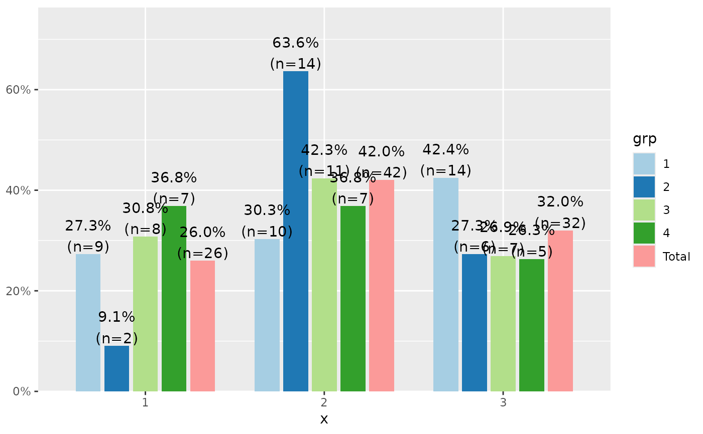
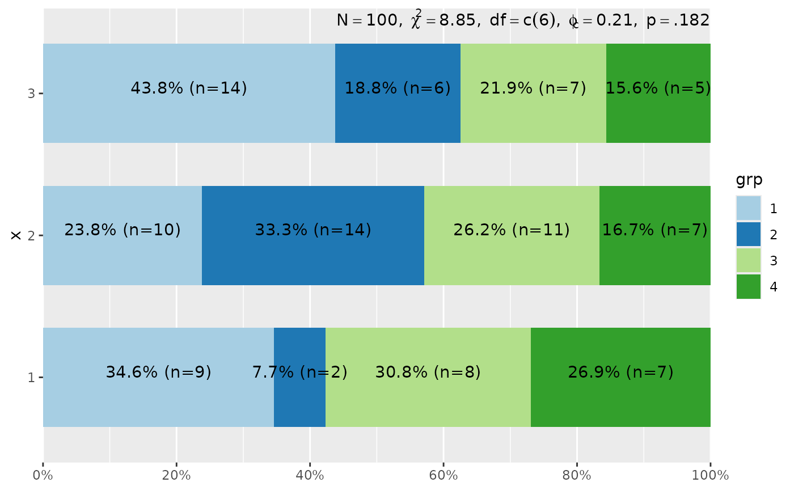
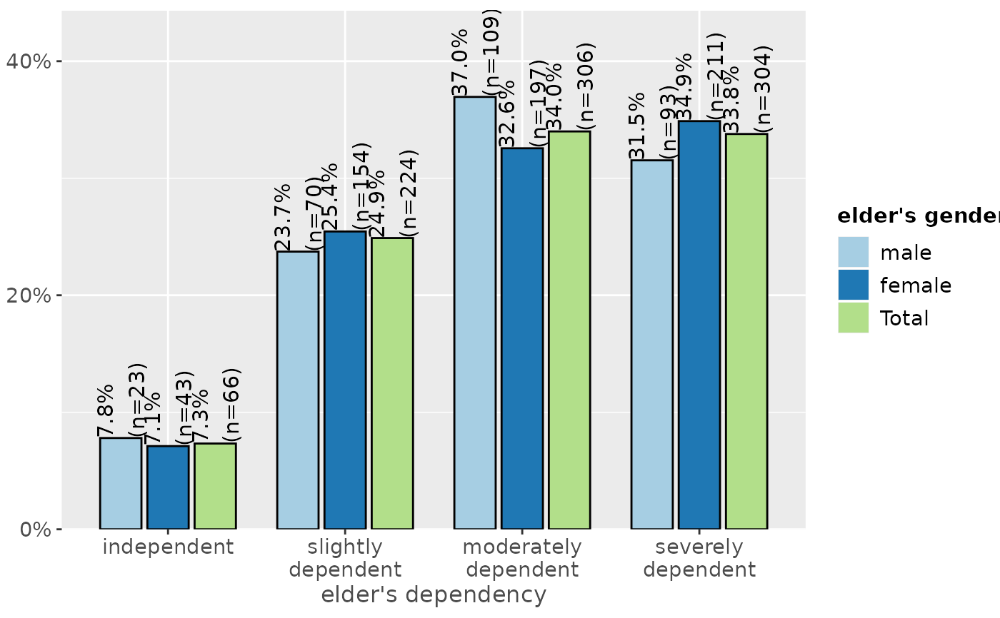
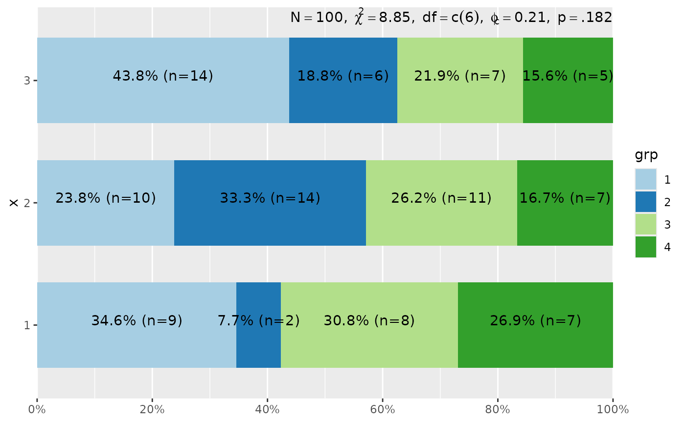
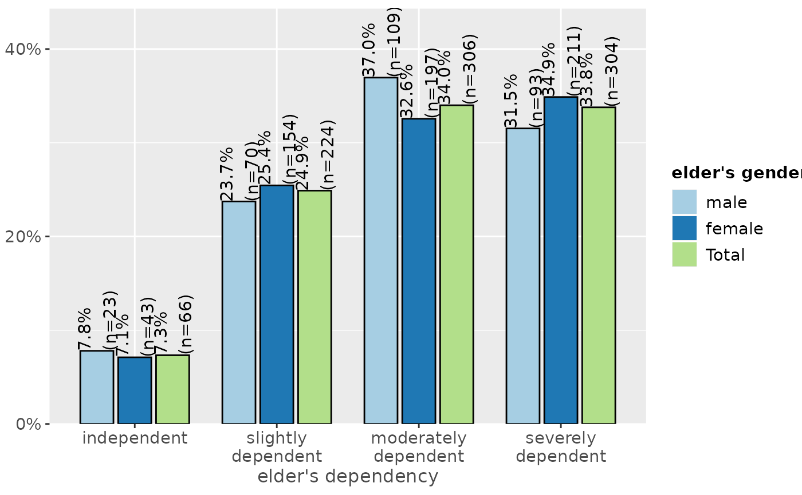
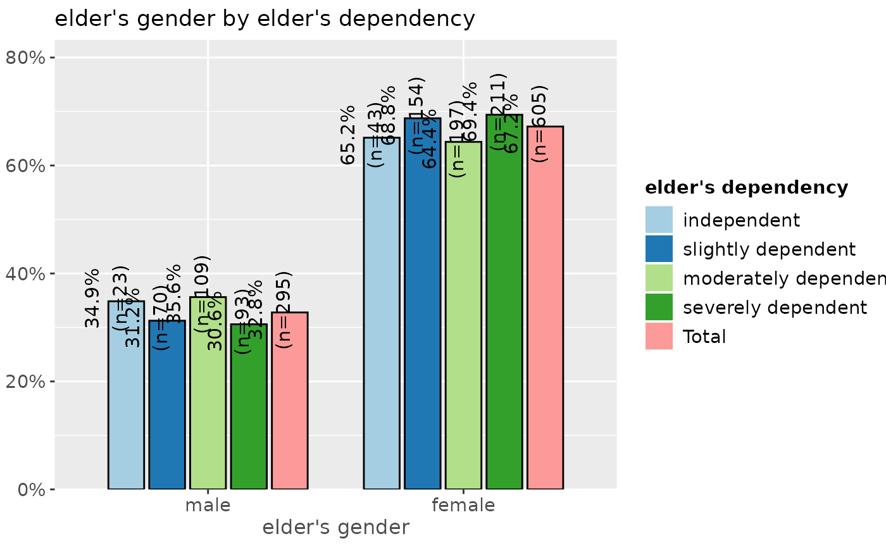
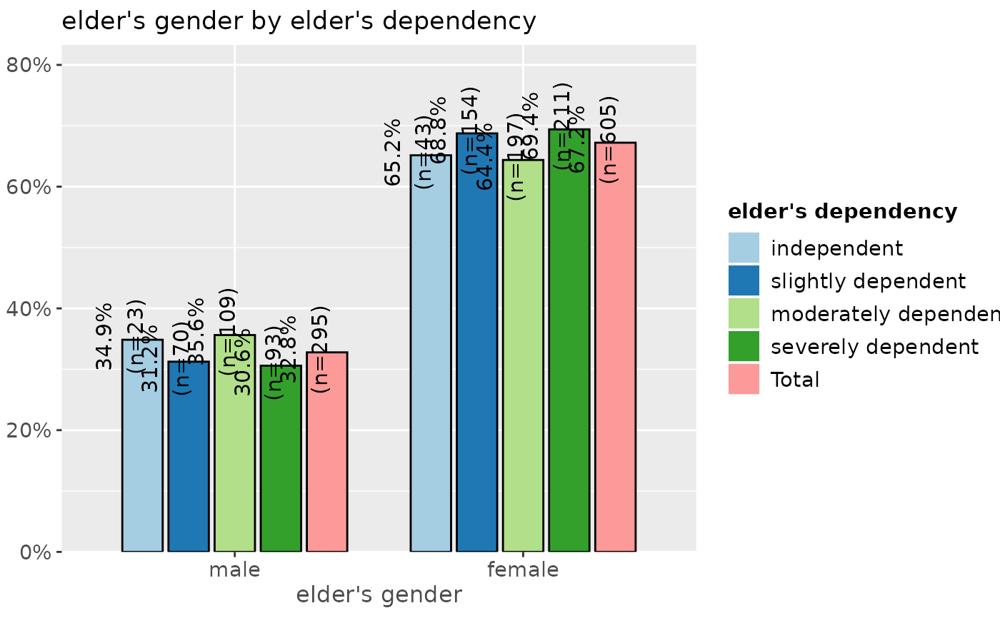

Plot proportional crosstables (contingency tables) of two variables as ggplot diagram.
plot_xtab(
x,
grp,
type = c("bar", "line"),
margin = c("col", "cell", "row"),
bar.pos = c("dodge", "stack"),
title = "",
title.wtd.suffix = NULL,
axis.titles = NULL,
axis.labels = NULL,
legend.title = NULL,
legend.labels = NULL,
weight.by = NULL,
rev.order = FALSE,
show.values = TRUE,
show.n = TRUE,
show.prc = TRUE,
show.total = TRUE,
show.legend = TRUE,
show.summary = FALSE,
summary.pos = "r",
drop.empty = TRUE,
string.total = "Total",
wrap.title = 50,
wrap.labels = 15,
wrap.legend.title = 20,
wrap.legend.labels = 20,
geom.size = 0.7,
geom.spacing = 0.1,
geom.colors = "Paired",
dot.size = 3,
smooth.lines = FALSE,
grid.breaks = 0.2,
expand.grid = FALSE,
ylim = NULL,
vjust = "bottom",
hjust = "center",
y.offset = NULL,
coord.flip = FALSE
)Arguments
| x | A vector of values (variable) describing the bars which make up the plot. |
|---|---|
| grp | Grouping variable of same length as |
| type | Plot type. may be either |
| margin | Indicates which data of the proportional table should be plotted. Use |
| bar.pos | Indicates whether bars should be positioned side-by-side (default),
or stacked ( |
| title | character vector, used as plot title. Depending on plot type and function,
will be set automatically. If |
| title.wtd.suffix | Suffix (as string) for the title, if |
| axis.titles | character vector of length one or two, defining the title(s) for the x-axis and y-axis. |
| axis.labels | character vector with labels used as axis labels. Optional argument, since in most cases, axis labels are set automatically. |
| legend.title | character vector, used as title for the plot legend. |
| legend.labels | character vector with labels for the guide/legend. |
| weight.by | Vector of weights that will be applied to weight all cases.
Must be a vector of same length as the input vector. Default is
|
| rev.order | Logical, if |
| show.values | Logical, whether values should be plotted or not. |
| show.n | logical, if |
| show.prc | logical, if |
| show.total | When |
| show.legend | logical, if |
| show.summary | logical, if |
| summary.pos | position of the model summary which is printed when |
| drop.empty | Logical, if |
| string.total | String for the legend label when a total-column is added. Only applies
if |
| wrap.title | numeric, determines how many chars of the plot title are displayed in one line and when a line break is inserted. |
| wrap.labels | numeric, determines how many chars of the value, variable or axis labels are displayed in one line and when a line break is inserted. |
| wrap.legend.title | numeric, determines how many chars of the legend's title are displayed in one line and when a line break is inserted. |
| wrap.legend.labels | numeric, determines how many chars of the legend labels are displayed in one line and when a line break is inserted. |
| geom.size | size resp. width of the geoms (bar width, line thickness or point size, depending on plot type and function). Note that bar and bin widths mostly need smaller values than dot sizes. |
| geom.spacing | the spacing between geoms (i.e. bar spacing) |
| geom.colors | user defined color for geoms. See 'Details' in |
| dot.size | Dot size, only applies, when argument |
| smooth.lines | prints a smooth line curve. Only applies, when argument |
| grid.breaks | numeric; sets the distance between breaks for the axis,
i.e. at every |
| expand.grid | logical, if |
| ylim | numeric vector of length two, defining lower and upper axis limits
of the y scale. By default, this argument is set to |
| vjust | character vector, indicating the vertical position of value
labels. Allowed are same values as for |
| hjust | character vector, indicating the horizontal position of value
labels. Allowed are same values as for |
| y.offset | numeric, offset for text labels when their alignment is adjusted
to the top/bottom of the geom (see |
| coord.flip | logical, if |
Value
A ggplot-object.
Examples
# create 4-category-items
grp <- sample(1:4, 100, replace = TRUE)
# create 3-category-items
x <- sample(1:3, 100, replace = TRUE)
# plot "cross tablulation" of x and grp
plot_xtab(x, grp)
#> Warning: `guides(<scale> = FALSE)` is deprecated. Please use `guides(<scale> = "none")` instead.

# plot "cross tablulation" of x and y, including labels
plot_xtab(x, grp, axis.labels = c("low", "mid", "high"),
legend.labels = c("Grp 1", "Grp 2", "Grp 3", "Grp 4"))
#> Warning: `guides(<scale> = FALSE)` is deprecated. Please use `guides(<scale> = "none")` instead.
 # plot "cross tablulation" of x and grp
# as stacked proportional bars
plot_xtab(x, grp, margin = "row", bar.pos = "stack",
show.summary = TRUE, coord.flip = TRUE)
#> Warning: `guides(<scale> = FALSE)` is deprecated. Please use `guides(<scale> = "none")` instead.

# example with vertical labels
library(sjmisc)
library(sjlabelled)
data(efc)
set_theme(geom.label.angle = 90)
plot_xtab(efc$e42dep, efc$e16sex, vjust = "center", hjust = "bottom")
#> Warning: `guides(<scale> = FALSE)` is deprecated. Please use `guides(<scale> = "none")` instead.

# grouped bars with EUROFAMCARE sample dataset
# dataset was importet from an SPSS-file,
# see ?sjmisc::read_spss
data(efc)
efc.val <- get_labels(efc)
efc.var <- get_label(efc)
plot_xtab(efc$e42dep, efc$e16sex, title = efc.var['e42dep'],
axis.labels = efc.val[['e42dep']], legend.title = efc.var['e16sex'],
legend.labels = efc.val[['e16sex']])
#> Warning: `guides(<scale> = FALSE)` is deprecated. Please use `guides(<scale> = "none")` instead.
# plot "cross tablulation" of x and grp
# as stacked proportional bars
plot_xtab(x, grp, margin = "row", bar.pos = "stack",
show.summary = TRUE, coord.flip = TRUE)
#> Warning: `guides(<scale> = FALSE)` is deprecated. Please use `guides(<scale> = "none")` instead.

# example with vertical labels
library(sjmisc)
library(sjlabelled)
data(efc)
set_theme(geom.label.angle = 90)
plot_xtab(efc$e42dep, efc$e16sex, vjust = "center", hjust = "bottom")
#> Warning: `guides(<scale> = FALSE)` is deprecated. Please use `guides(<scale> = "none")` instead.

# grouped bars with EUROFAMCARE sample dataset
# dataset was importet from an SPSS-file,
# see ?sjmisc::read_spss
data(efc)
efc.val <- get_labels(efc)
efc.var <- get_label(efc)
plot_xtab(efc$e42dep, efc$e16sex, title = efc.var['e42dep'],
axis.labels = efc.val[['e42dep']], legend.title = efc.var['e16sex'],
legend.labels = efc.val[['e16sex']])
#> Warning: `guides(<scale> = FALSE)` is deprecated. Please use `guides(<scale> = "none")` instead.
 plot_xtab(efc$e16sex, efc$e42dep, title = efc.var['e16sex'],
axis.labels = efc.val[['e16sex']], legend.title = efc.var['e42dep'],
legend.labels = efc.val[['e42dep']])
#> Warning: `guides(<scale> = FALSE)` is deprecated. Please use `guides(<scale> = "none")` instead.
plot_xtab(efc$e16sex, efc$e42dep, title = efc.var['e16sex'],
axis.labels = efc.val[['e16sex']], legend.title = efc.var['e42dep'],
legend.labels = efc.val[['e42dep']])
#> Warning: `guides(<scale> = FALSE)` is deprecated. Please use `guides(<scale> = "none")` instead.
 # -------------------------------
# auto-detection of labels works here
# so no need to specify labels. For
# title-auto-detection, use NULL
# -------------------------------
plot_xtab(efc$e16sex, efc$e42dep, title = NULL)
#> Warning: `guides(<scale> = FALSE)` is deprecated. Please use `guides(<scale> = "none")` instead.

plot_xtab(efc$e16sex, efc$e42dep, margin = "row",
bar.pos = "stack", coord.flip = TRUE)
#> Warning: `guides(<scale> = FALSE)` is deprecated. Please use `guides(<scale> = "none")` instead.
# -------------------------------
# auto-detection of labels works here
# so no need to specify labels. For
# title-auto-detection, use NULL
# -------------------------------
plot_xtab(efc$e16sex, efc$e42dep, title = NULL)
#> Warning: `guides(<scale> = FALSE)` is deprecated. Please use `guides(<scale> = "none")` instead.

plot_xtab(efc$e16sex, efc$e42dep, margin = "row",
bar.pos = "stack", coord.flip = TRUE)
#> Warning: `guides(<scale> = FALSE)` is deprecated. Please use `guides(<scale> = "none")` instead.